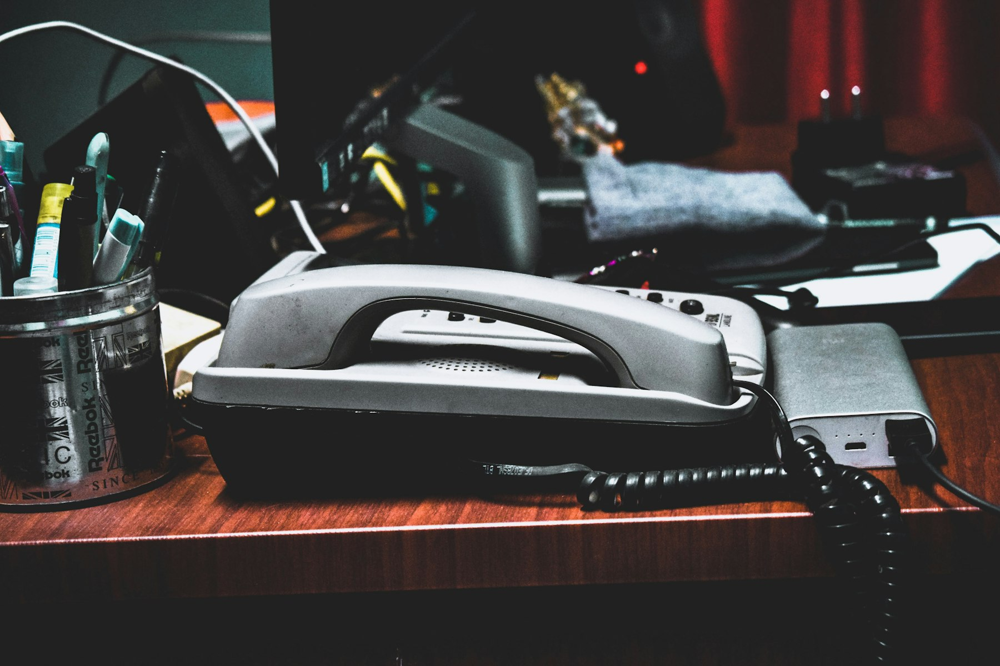
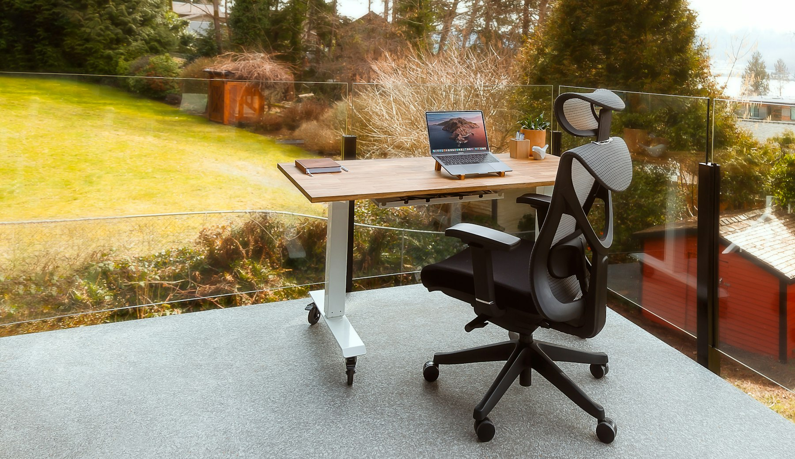
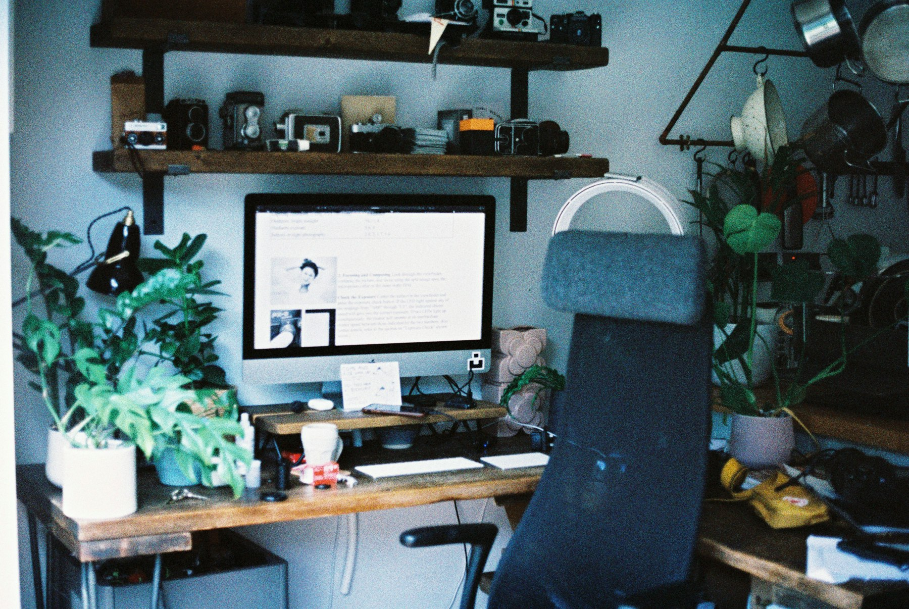

TL;DR
Busy professionals can start a side hustle in just 30 days. Key steps involve leveraging platforms like Upwork or Fiverr and committing a few hours weekly to effectively manage your workload. Avoid common pitfalls like overextending financial resources to ensure sustainable growth.
Side Hustles Are Perfect for Busy Professionals

For busy professionals, the question isn't whether to start a side hustle, but which one fits into an already packed schedule. Data shows that over 40% of Americans have a side hustle for extra income, but for those managing demanding jobs, finding the right balance is crucial.
Side hustles not only help with financial stability by diversifying income streams but also provide personal satisfaction and opportunities for creativity.
For instance, web design freelancers can earn upwards of $50/hour while working flexible hours to fit around their full-time commitments. Understanding these benefits and effective strategies can make side hustles a viable part of busy professionals' lives.
Why Common Advice for Side Hustles Often Fails
The common advice to 'just find a side job you love' can lead to frustration, especially when passion doesn't pay the bills. Many busy professionals fall prey to misconceptions like needing vast amounts of free time, unnecessary prodigious startup capital, or specialized skills.
The reality is that establishing a side hustle is less about grand visions and more about concrete, manageable steps. For example, an aspiring freelance writer might think they need an extensive portfolio, but starting on platforms like Upwork requires just a few samples.
The key lies in focusing on incremental progress rather than overwhelming expectations, helping busy professionals to cultivate productive side gigs without the need for extensive resources.
The Key Steps to Launch a Side Hustle

To successfully start a side hustle, follow this streamlined workflow: 1. Identify Opportunities: Look for interests you can monetize, such as graphic design or tutoring. 2. Choose a Platform: Use established marketplaces like Etsy for crafts or Fiverr for services to minimize risks. 3. Set Realistic Goals: Aim for a small, achievable income target, such as $200 in your first month. 4. Create a Schedule: Dedicate specific blocks of time weekly (like 5 hours) to focus on your side hustle. 5. Iterate Quickly: Collect feedback and adjust your service offerings based on market demands to increase profitability. 6. Scale Gradually: Once you establish a customer base, consider reinvesting earnings for growth, perhaps using platforms like Shopify to create an online store. This structure helps busy professionals stay organized while effectively managing their primary job and side hustle.
Real-World Scenario: Achieving Side Hustle Goals

### Real-World Scenario: Achieving Side Hustle Goals
Consider the example of a marketing manager named Sarah who decides to start a social media consultancy as her side hustle. With a strong background in digital marketing, Sarah understands the demand for social media expertise among small businesses.
In her first week, she focuses on establishing her brand by blogging about best practices in social media management. By sharing insights on topics like engagement strategies and analytics, she positions herself as an authority in the field.
In the second week, Sarah takes the next step by creating profiles on popular freelance platforms such as Upwork and Fiverr. She sets competitive rates, starting at $25 per hour, which attracts her first clients quickly.
By the end of week three, she wins her initial two projects – one for a local coffee shop that needs help with Instagram and another for a budding online boutique looking to boost its Facebook presence.
Together, these projects bring in $500, a comforting addition to her monthly income.
However, Sarah quickly learns that balancing her full-time job with her side hustle requires sacrifices. She dedicates her evenings and weekends to client calls and project work, reducing her leisure time.
While rewarding, this hustle does impact her social life, as she frequently declines invitations to events.
By the end of the 30 days, Sarah has not only made a supplemental income but also established a solid foundation for a potentially lucrative consulting business.
For future goals, Sarah starts outlining monthly revenue targets, aiming for $1,500 by the end of the next two months. She plans to invest part of her earnings in online courses to enhance her skills further, ensuring she provides even better service to her clients.
This approach not only helps her grow her income but also solidifies her expertise, making her more competitive in a growing market.
Common Pitfalls and Decisions to Avoid
While embarking on a side hustle can be exciting, there are common pitfalls that can derail your efforts. One major mistake is underestimating the time commitment; many professionals assume they can easily fit a side project into their busy lives.
Another tradeoff involves overextending financial resources; investing too much upfront without guaranteed returns can lead to burnout. For example, a budding online store owner might spend thousands on inventory before confirming demand.
Thus, prioritizing a lean startup approach—testing concepts with minimal investment—is vital. The more you understand the boundaries of your time and financial capacity, the better you can navigate challenges and make informed decisions for sustainable growth.
Next Steps: Scaling Your Side Hustle
Once your side hustle gains traction, it’s time to think about expanding. Start by evaluating your earnings and customer feedback and analyze which aspects of your side hustle are generating the most interest.
Networking with other professionals can uncover collaborative opportunities or resources you might not have previously considered. For instance, can you offer bundled services with a partner to draw in more clients?
Engaging your network not only offers potential customers but also valuable insights into industry trends. Begin to allocate more time efficiently and reinvest your profits where necessary.
For busy professionals, sidestepping the common frustrations can lead to the realization that a side hustle successfully complements your primary job while providing avenues for future financial growth.
FAQ
What side hustles can I start with limited time?
Freelancing on platforms like Fiverr or Upwork can be started with minimal time investment. Tasks like graphic design, content writing, or virtual assistance often offer flexible schedules.
How can I balance a full-time job and a side hustle?
Establish a concrete schedule with designated times for your side hustle. Consider dedicating specific hours during the week, like weekends or evenings, to keep your work-life balance in check.
This article has been reviewed for practical usefulness and updated when information changes.
Next step
Use the article as a decision point, not just reading material. Your next system matters more than more browsing.
Search more articles
Find related tools, workflows, and guides.
Photo credits
- Photo 1: Nishal Pavithran via Unsplash
- Photo 2: Christine Donaldson via Unsplash
- Photo 3: EFFYDESK via Unsplash
- Photo 4: Annie Spratt via Unsplash
- Photo 5: Ales Nesetril via Unsplash